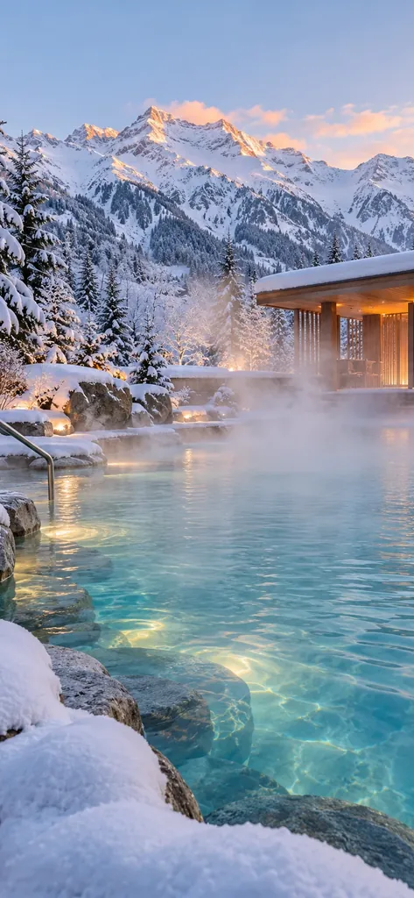
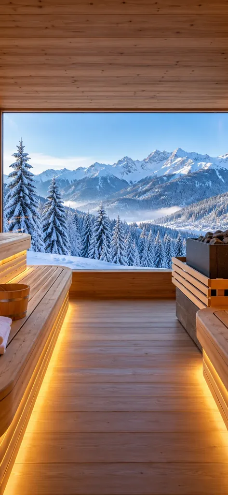
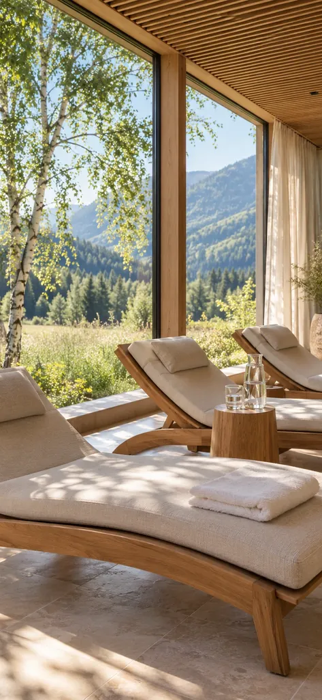
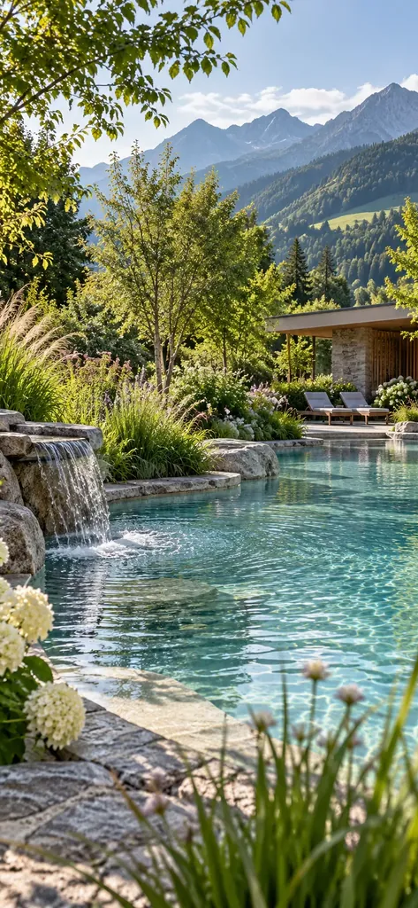

Ruhe, die man sehen kann. Das ganze Jahr.
Wir zeigen, wie sich ein Tag bei Ihnen anfühlt, und holen Gäste in den ruhigen Monaten.
Auf einen Blick
Ruhe hat keine Saison.
Wenn es draußen warm ist, wird es in Thermen und Spas ruhiger, die Kosten laufen weiter. Wir machen Gutscheine und Abendangebote zu Gründen für einen Besuch.
- Für wen
- Thermen, Freizeitbäder und Wellnessbetriebe, privat oder kommunal.
- Was wir machen
- Shootings im Sommer und Winter, dazwischen Reels, Posts und Stories.
- Wo
- Aus Füssen im Allgäu, im ganzen Alpenraum und darüber hinaus.
- Angebot
- Individuell, nachdem wir Ihren Betrieb kennengelernt haben.
Das Thermenjahr
Entdeckt bei jedem Wetter, auch in ruhigen Monaten.
-
Entdecken
64 % der Urlauberinnen und Urlauber mit Social-Media-Nutzung holen sich dort Ideen für Ausflüge und Aktivitäten am Urlaubsziel.
Bitkom Research, Juli 2025: telefonische Befragung von 1.006 Personen ab 16 Jahren, davon 709 Reisende mit Social-Media-NutzungWas wir tun
Wir zeigen Wärme, Wasser und Ruhe dort, wo Ausflüge geplant werden.
-
Bei jedem Wetter
Regentag. Bei Schneemangel im Winter oder an Regentagen im Sommer ist ein Thermenbesuch eine gute Alternative.
WIFO 2023, Die volks- und regionalwirtschaftliche Bedeutung des Thermentourismus in ÖsterreichWas wir tun
Wir planen Beiträge nach dem Wetter. Fällt der Ausflug ins Wasser, sind Sie der erste Vorschlag.
-
Ruhige Monate
März–Oktober nennt die Stadt Karlsruhe die „schwachen“ Monate ihrer Therme.
Stadt Karlsruhe, Beschlussvorlage Bäderausschuss vom 11.06.2021Was wir tun
Abendangebote, Außenbecken, Gutscheine: Wir zeigen Gründe für einen Besuch, gerade wenn es draußen warm ist.
So kann es aussehen
Ihre Therme im Feed.
So können Ihre Beiträge aussehen.

Dampf über dem Becken Warm baden im Schnee

Sauna mit Fernblick Aufguss mit Panorama

Ruheraum Eine Stunde nur für sich

Naturbad im Sommer Ruhe zu jeder Jahreszeit
Sichtbarkeits-Check
Wie sichtbar ist Ihre Therme?
Vier kurze Fragen. Am Ende sehen Sie, wo Sie stehen und was am meisten bringt.
Ihr Ergebnis
– / 8 Beantworten Sie die vier Fragen.
Ein Selbst-Check, keine Messung. Er zeigt, wo die größten Hebel liegen.
Mit diesem Ergebnis anfragenLeistungen & Angebot
Was dazugehört und was es kostet.
Das gehört dazu
- Kennenlernen und erste Aufnahmen vor Ort
- Zwei Shootings im Jahr, Sommer und Winter
- Reels, Posts und Stories: ausgewählt, bearbeitet, geplant, veröffentlicht
- Texte, Schlagwörter und Ortsangaben, damit man Sie auf Instagram, YouTube und Google findet
- Jeder Beitrag geprüft, auf Wunsch auch von Ihnen
- Regelmäßige Berichte, was bei Ihren Gästen ankommt
Nicht im Standardpaket
- Werbeanzeigen, Google-Unternehmensprofil und Website: eigene Leistungen
- Einzelne Produktionen ohne laufende Betreuung: auf Anfrage
Was kostet das?
Feste Pakete gibt es nicht. Ihr Angebot hängt vor allem von vier Dingen ab.
- Standorte Einer oder mehrere, und wie weit sie auseinanderliegen.
- Bereiche Therme, Sauna, Spa, Hotel, Gastronomie: was wir zeigen sollen.
- Umfang Reels, Posts und Stories pro Monat.
- Kanäle Welche Plattformen wir bespielen.
Fragen
Fragen von Thermen.
Bringt Social Media wirklich mehr Besuche?
Das hat noch keine Studie gemessen. Deshalb messen wir es bei Ihnen, mit eigenen Links und Codes, etwa für Gutscheine und Abendangebote.
Arbeiten Sie auch für kommunale Bäder?
Ja. Die längeren Abstimmungs- und Vergabewege planen wir von Anfang an ein.
Fragen zu Kosten und Ablauf beantworten wir hier.
Sprechen wir
Erzählen Sie uns von Ihrer Therme.
Standorte, Besuche und Ihre Kanäle helfen uns beim ersten Angebot. Wir melden uns innerhalb von drei Werktagen.
Ihre Ansprechpartner
-
 Nicolas Lekai Creative Direction
Nicolas Lekai Creative Direction
-
 Daniel Lenzenhuber Management
Daniel Lenzenhuber Management
-
 Raffaele Fusco Web Designer & Developer
Raffaele Fusco Web Designer & Developer
Weitere Bereiche